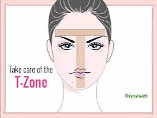
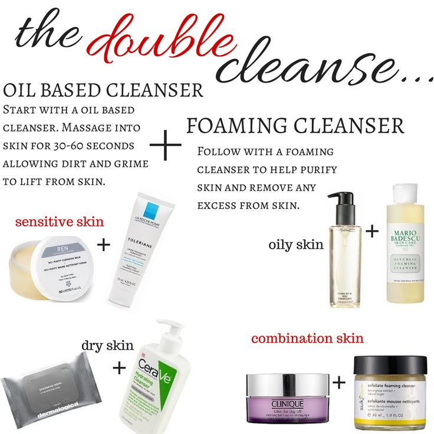

Discovering your skin type
Allyson TishlerEveryone’s skin is different and unique to them due to our world’s genetic variance. However, despite the vast amount of skin types out there, we are still able to classify them into four groups: Normal, Dry, Oily, and Combination. This method has been used by dermatologists for years to help patients treat their skin correctly. Let’s look at the differences between these four categories.
Normal Skin refers to skin that is well-balanced, not too oily nor too dry. It is common for the T-zone (forehead, nose, and chin) to still be a bit oily, but the sebum levels are balanced to produce an even, smooth texture.

Dry Skin refers to skin that feels tight and/or rough. Skin can appear dry due to the lack of sebum production resulting in less lipids to retain moisture. Because there aren’t enough lipids produced, the skin is not able to build it’s typical shield against external influences, thus leading to dryer skin.
Oily Skin refers to skin that appears glossy due to its heightened sebum production. A side-effect of oily skin is the increased visibility of pores. Oily skin can be caused by hormonal changes/imbalances, stress, or irritation from make-up products.
Combination Skin refers to skin that consists of various skin types depending on the location on the face. This type of skin is typically identified by an oily T-zone, but dryer skin in the cheek area.
Skincare Routine for Beginners
Allyson TishlerWith social media usage being higher than ever, it is easy for one to simply search up “Skincare Routine” and find loads of videos telling them what products to buy and why. It can be overwhelming a first, but there is a simple formula to follow when first getting into the skincare scene.
ADD A LIST HERE
Oil Cleanser
An oil cleanser is optional depending on one’s specific needs in their skincare routine. For individuals who either wear make-up or feel that their skin gets a buildup of sebum through the day, I would strongly recommend using an oil cleanser. Oil cleansers have been known to break down the oil and dirt on your face while also maintaining the moisture in your skin.
Cleanser
Everyone should invest in a good, gentle cleanser. Dirt and oil build up over time on your skin and can soak into your pores, causing acne and inflammation. Some cleansers are rough on your skin and can strip it of all the beneficial bacteria and substances that your skin naturally produces. This is why it is important to do your research before purchasing and invest in a gentle cleanser that will clean your skin but won’t strip it down.

Toner
Adding a toner into your skincare routine has been shown to lead to the tightening of skin, thus causing the “anti-aging” look. In addition to this, toner is seen as the final cleansing step. It is that last step to remove any dead skin cells or dirt that was left behind from the cleansing. Toners will give your skin more balance and hydration.
Serum
There are numerous amazing serums on the market that you can add into your routine. Serums can help with radiance, hydration, dark spots, and more. Some choose to use multiple serums in their skincare routine. For example, I personally use two serums in my routine: snail mucus serum and vitamin c serum.
Moisturizer
This is an essential step in one’s skincare routine. While some people’s skin naturally produces a vast amount of sebum, it is always important to help your skin with moisture. All of the cleansing and toners can lead to your skin losing most of its oils. In the winter months, it’s common for individuals to get dry spots on their face due to the colder weather and their skins reaction to it. This is why it’s important to get a good moisturizer, whether it be gel or cream-based, to add that moisture back into your skin.
This skincare routine is mainly for nighttime use. If you want to build a routine for the mornings, drop the double cleanse (don’t use an oil cleanser), and instead use a gentler, pH balanced morning cleanser. Also, add a good sunscreen as the last step in your routine.
User Ratings for Double Cleansing Method
| Gender | Uses per day | User Rating |
|---|---|---|
| Female | 2 | 97% |
| Female | 1 | 89% |
| Male | 1 | 91% |